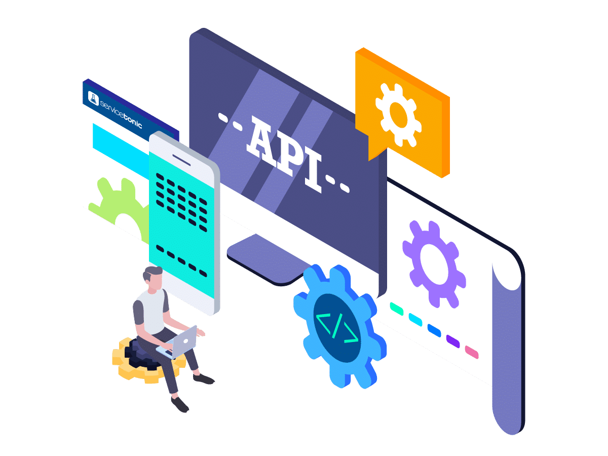
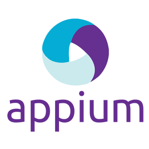
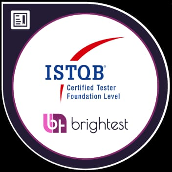

Hola, soy Juan Francisco Builes
Ingeniero de Automatización de Pruebas
Más de 6 años creando soluciones de calidad para aplicaciones web, móviles y APIs. Apasionado por la mejora continua, las metodologías ágiles y las entregas confiables.

Sobre mí
Ingeniero de Software especializado en Automatización de Pruebas con más de 6 años de experiencia desarrollando soluciones robustas para aplicaciones web, móviles y APIs. Mi enfoque está en garantizar la calidad del software mediante la implementación de frameworks escalables, integración continua y mejores prácticas de testing.
Frameworks & Herramientas
- Selenium WebDriver, Serenity BDD, Appium
- Cypress, Playwright
- JUnit, TestNG, Cucumber (BDD)
- RestAssured, Postman
Stack Tecnológico
- Java (Avanzado)
- Ruby, JavaScript
- SQL Server, MySQL
- Git, Jenkins, Azure DevOps
Patrones de Diseño
- Screenplay (Serenity)
- Page Object Model (POM)
- Builder Pattern
- Factory Pattern
Especialidades
Experiencia Profesional
Desarrollo y ejecución de pruebas automatizadas para aplicaciones empresariales de alto tráfico.
- Automatización de servicios REST con Ruby y frameworks HTTP, mejorando la cobertura en un 40%
- Implementación de pruebas móviles con Appium para aplicaciones nativas (Android/iOS)
- Aplicación del patrón Page Object Model (POM) para mejorar la mantenibilidad del código
- Gestión de versiones con Git: estrategias de branching, code reviews y documentación
- Planificación y diseño de estrategias de testing en metodologías ágiles (Scrum)
- Desarrollo de casos de prueba siguiendo estándares Gherkin (BDD)
- Ejecución de pruebas manuales exploratorias y de UX
Automatización avanzada de servicios web y APIs utilizando frameworks modernos.
- Implementación de Screenplay (Serenity BDD) y POM para servicios REST/SOAP
- Integración de pipelines CI/CD con Jenkins, reduciendo el tiempo de despliegue en 50%
- Migración exitosa de Subversion a Git con capacitación al equipo
- Gestión de repositorios Git: estrategias de branching, tags y releases
- Diseño de arquitecturas de testing escalables y mantenibles
- Configuración de entornos automatizados de ejecución
- Coordinación de despliegues continuos mediante Jenkinsfiles
- Documentación técnica de procesos de migración y versionamiento
Automatización de pruebas funcionales y soporte técnico para sistemas críticos bancarios.
- Automatización del 60% de pruebas funcionales web con Selenium WebDriver y Java
- Implementación de framework POM escalable para múltiples proyectos
- Reducción del tiempo de ejecución de pruebas en un 70%
- Soporte y mantenimiento de sistemas críticos (IBM MQ, IBM Broker)
- Análisis y reporte de defectos con seguimiento en Jira
- Colaboración estrecha con equipos de desarrollo en ambiente ágil
Habilidades Técnicas
Frameworks de Automatización
Lenguajes de Programación
Testing Frameworks
CI/CD & DevOps
Herramientas & Plataformas
Metodologías
Educación
Ingeniería de Software
Tecnológico de Antioquia · Medellín, Colombia
Formación sólida en desarrollo de software, arquitecturas de sistemas, bases de datos y metodologías ágiles. Desarrollo de proyectos académicos enfocados en calidad de software y testing.
Proyectos destacados


Certificaciones

ISTQB® Certified Tester Foundation Level (CTFL)
Certificación internacional en fundamentos de pruebas de software, que cubre procesos de testing, técnicas, gestión de pruebas y mejores prácticas de calidad en el desarrollo de software.